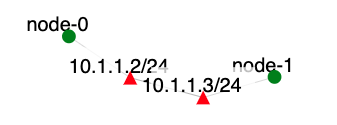

Overview
In this exercise, you will reinforce various important worm related concepts you learnt in class:
- how worms spread under different scanning strategies
- how worm spreads can be curbed with different patching strategies
- modeling methodology that can be used to predict how fast a worm can spread
- using automatically generated signature to filter suspicious worm packets
- how to automatically generate and retain useful worm signatures
Required Reading
- Short summary of SlammerWorm attack on Wikipedia
- Short summary of WiityWorm attack on Wikipedia
- Tcpdump's man page
Introduction
In this exercise, we are going to use the PAWS simulator developed by S. Wei and Dr. J. Mirkovic [1] using the DETER testbed. PAWS is a discrete time packet-level simulator which simulates a realistic Internet model and the background traffic load, enabling investigation of possible congestion effects and sufferings of legitimate traffic during a worm attack. PAWS supports various user-customizable parameters that enable testing of different worm characteristics, host and network diversity models. Before you do this experiment, you should read carefully the reference papers [2], [3],[8], [9]. In this exercise, you will replicate an experiment which was carried out by the authors in [3] to evaluate how their proposed host-based dynamic quarantine system can help to contain Internet worm propagation. Table 1 lists the original experiment settings in [3] and the configuration and customization of PAWS used in [2] to match the settings in [3].
| Original Simulation | PAWS simulation |
| IPV4 address space with 2^32 addresses | Default Internet Model includes entire IPV4 address space |
| Vulnerable population = 75,000 | Vulnerable population = 75,000 |
| Average scan rate = 4,000/second | Average scan rate = 4,000/second |
| 10 hosts are infected initially | In function determin_vulnerable_host(), randomly mark 10 vulnerable hosts as infected |
| Simulation time unit = 0.05 sec | Simulation time unit = 0.05 sec |
| Dynamic quarantine, with quarantine rate = 0.2/sec and quarantine time = 10secs | In function update_infectee_status(), if an infectee is currently active, mark it as quarantined with a prability of 0.2 per second. In function update_infectee_status(), if an infectee has been quarantined for 10 seconds, mark it as active. In function worm_infectee_scan(), if an infectee is currently quarantined, skip its scanning activity for the current simulation interval |
Assignment Instructions
Setup
- If you don't have an account, follow the instructions here.
-
Create an instance of this exercise by following the instructions here, using
wormas Lab name. Your topology will look like below:
. - After setting up the lab, access your nodes.
The /tmp/node-0/paws on node-0 folder contains the following files:
- ASLinks.dat - a file which contains all the inter-AS links with corresponding bandwidth values assigned
- BGPAtom2AS.dat - a file which maps BGP atoms to the owner ASes.
- IPRangeTable.dat - a file which contains all the IP ranges with their owner BGP atoms and ASes.
Similarly the folder /tmp/node-1/paws on node-1 contains the same files.
Tasks
Generating and Logging Attacks
Attacks can be generated and logged using the following steps (remember to use sudo in front of each command):
- Log onto
node-0 - In the
/tmp/node-0/pawsdirectory runmake. - Log onto
node-1 -
In the
/tmp/node-1/pawsdirectory runmake. Then run:curl https://steel.isi.edu/paws_RT.dat.gz -o paws_RT.dat.gzThen run
gunzip paws_RT.dat.gz. - In
pawsfolder, runpaws_server > logonnode-0andpaws_client > logonnode-1. Code may run slowly toward the end and it may take about 2h to finish. - Do the analysis on the data contained in each log file.
- Modify
client.cin the paws directory to include the quarantine effect and change the log filenames on each machine. Then, recompile and repeat the experiment. Analyze the new log files.
Analyzing the log files
You need to replicate the Slammer Worm experiment (note that this choice can be made in client.c in the paws directory by choosing either the #define SLAMMER_WORM or WITTY_WORM line and recompiling using make) and plot two curves similar to Figure 1 in Tools for Worm Experimentation on the DETER Testbed. The first plot should show how the number of infected hosts varies with time for an original system and a quarantined system. The second plot should show how the number of infected hosts and the number of quarantined hosts vary with time. In your submitted report, you should first describe briefly how Slammer worm spreads in the Internet and summarize how the proposed host-based dynamic quarantine system works. Then, include your plots and discuss the impacts of varying some of the configuration parameters e.g. the quarantine rate.
What can go wrong
- Segmentation fault. The segmentation fault may be caused by an incomplete paws_RT.dat file. A complete version of that file should be about 645 Mbytes long.
- Always rerun make in the paws directory if any .c or .h file is modified.
Submission Instructions
Please submit your report and your modified programs (only .c files are required). The report should describe how Slammer worm spreads and how the proposed host-based dynamic quarantine system works. It should also include your plots (see section Analyzing the log files for more details) and your discussions on the impacts of varying some of the configured parameters e.g. the quarantine rate. The .c files should not be included in the report but submitted as separate files.